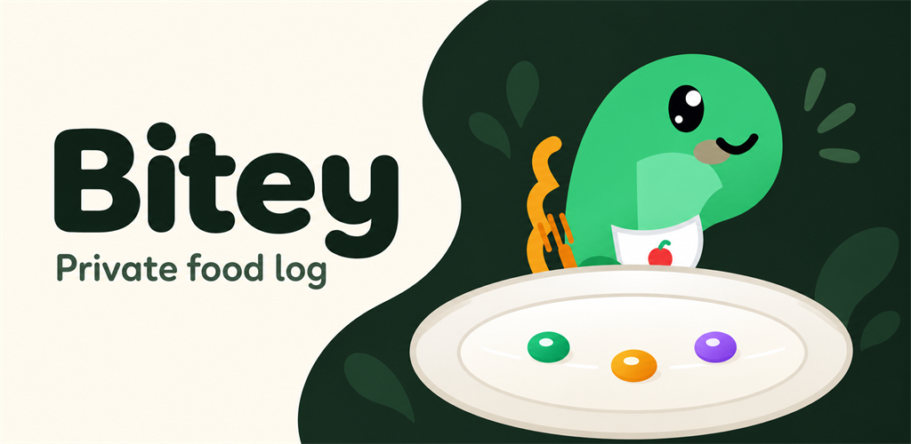
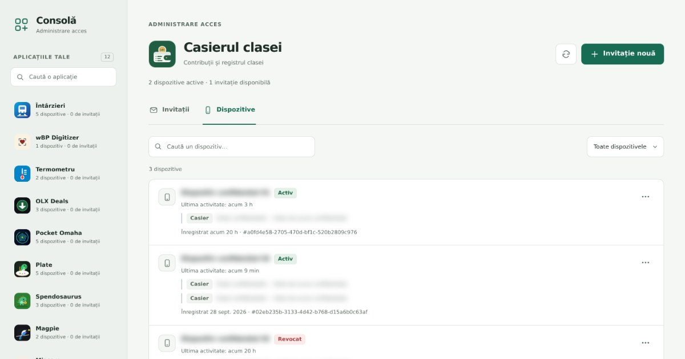

रोज़मर्रा के औज़ार
Bitey
भोजन की तस्वीर लें, मात्रा ठीक करें और Bitey की मदद से भोजन डायरी रखें।
पिछले प्रवेश परिणाम देखें और बुखारेस्ट के हाई स्कूल विकल्पों का अनुकरण करें।

बुखारेस्ट में हाई-स्कूल प्रवेश के विकल्प व्यवस्थित करने के लिए रोमानियाई भाषा की मार्गदर्शिकाएँ, काल्पनिक डेटा वाली वर्कशीट, ऐतिहासिक समेकित आँकड़े और वैकल्पिक Python स्क्रिप्ट।
ZIP डाउनलोड करके निकालें, फिर ब्राउज़र में START.html खोलें। गाइड और वर्कशीट के लिए प्रोग्रामिंग का ज्ञान ज़रूरी नहीं है। व्यक्तिगत रिकॉर्ड अपने उपकरण पर ही रखें; ये वर्कशीट आधिकारिक प्रवेश आवेदन नहीं हैं।
2026-10-21.1 संस्करण सीमा: बीएसी इतिहास को प्रत्येक स्कूल के लिए एक स्रोत पृष्ठ के साथ, सार्वजनिक प्लसएडु तालिकाओं से फिर से बनाया गया था। इसमें केवल 82 स्कूल शामिल हैं और स्रोत इसके आंकड़ों को संशोधित कर सकता है। मूल PDF और XLSX को बाहर रखा गया है; वर्तमान मंत्रालय और आईएसएमबी दस्तावेजों को सत्यापित करें।

भोजन की तस्वीर लें, मात्रा ठीक करें और Bitey की मदद से भोजन डायरी रखें।

एक छोटा घटक जो वेब ऐप को ऑफ़लाइन चलने और अपडेट रहने में मदद करता है।

निजी वेब ऐप के निमंत्रण और उपकरण सँभालने के लिए एक छोटा कंसोल।